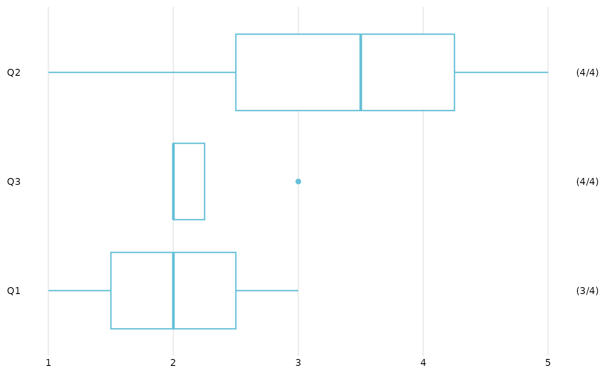
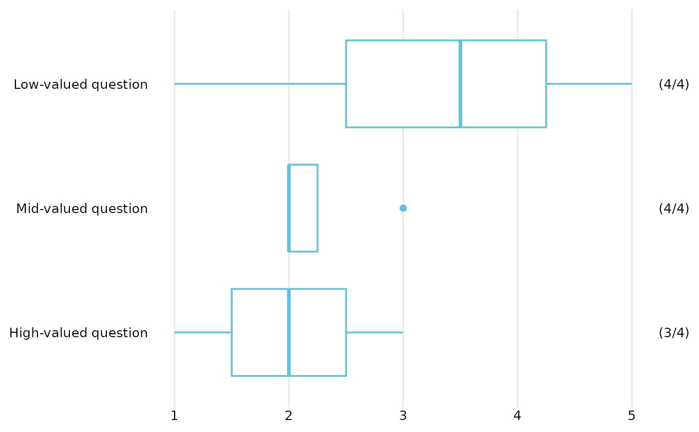
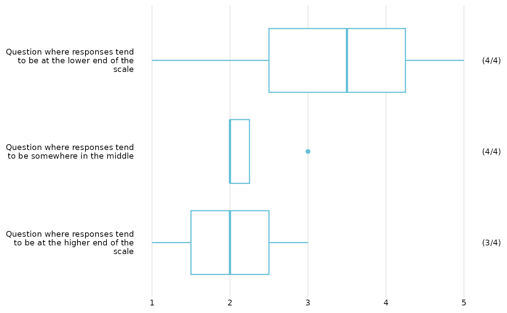
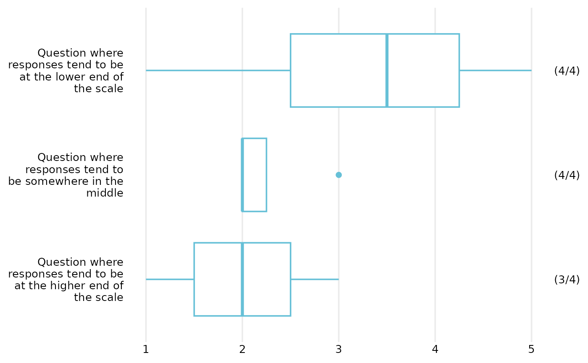
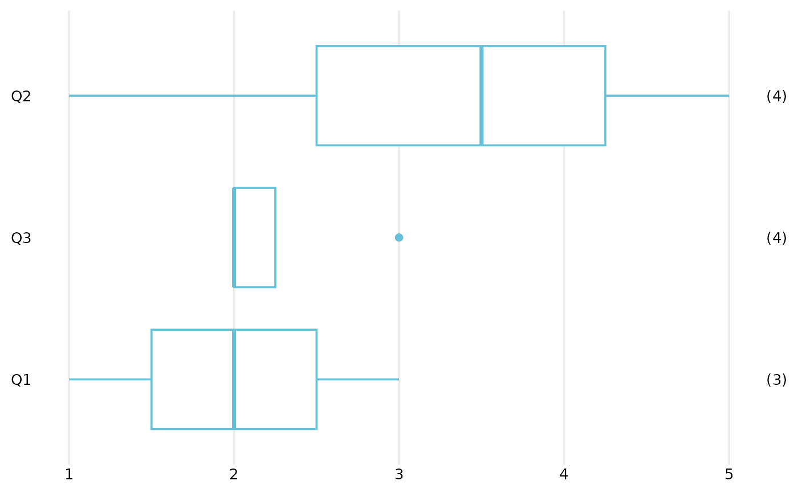
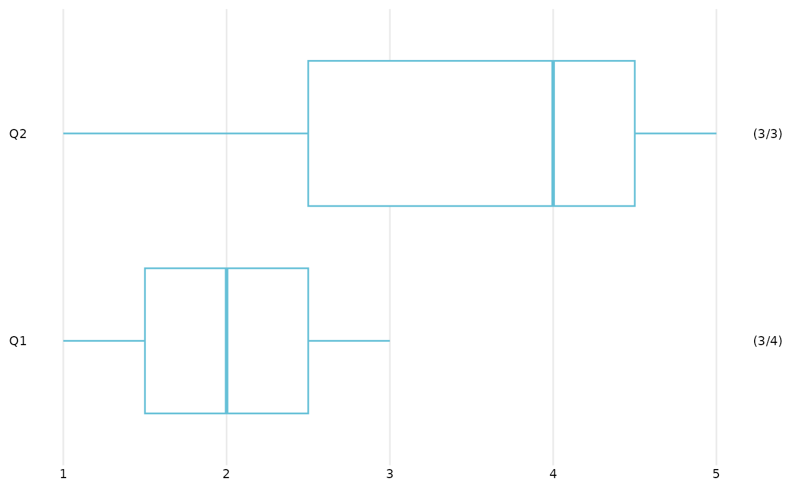

Section-level summary plot for numeric questions
summary_plot_boxplot.RdMake a horizontal boxplot to summarise several numeric survey questions, with questions ordered according to a summary statistic (by default the median of observed responses).
Usage
summary_plot_boxplot(
dat,
dat_format = "auto",
labels_vec = NULL,
na.rm = FALSE,
count_style = if (na.rm) "non-missing" else "both",
order_fun = median,
titleText = NULL,
value_percent_labels = FALSE,
value_percent_scale = c("present", "proportion"),
group_label_width = 30,
base_size = 14,
...
)Arguments
- dat
A tibble/data.frame containing survey responses.
The function supports two input formats:
Simple format: one numeric column per question. All questions are assumed to be included and plotted.
Extended format: columns named using the pattern
question_value, with optionalquestion_includeandquestion_plotcolumns.*_valuecolumns contain numeric responses.*_include(logical) indicates whether a response is included in the analysis at all.*_plot(logical) indicates whether a response is shown in the plot (values set toFALSEare treated as missing).
Any missing
*_plotand*_includecolumns are assumed to beTRUE.In all cases,
all
*_valuevariables should be numeric.only variables to be used in the plot should be included. I.e. calls may need to be of the form
data |> dplyr::select(<variables needed for plotting>) |> summary_plot_boxplot().
- dat_format
One of
"auto","simple", or"extended". Defaults to"auto", which detects extended format if any*_valuecolumns are present, otherwise assumes simple format.- labels_vec
Optional named character vector of labels to use for the questions on the plot. Names should correspond to variable names (without
_valueappended in extended format), and values are the labels to display on the axis.- na.rm
Logical. Determines the default value of
count_style. WhenTRUE,count_styledefaults to"non-missing"; whenFALSE, it defaults to"both".(Missing values do not contribute to the boxplot itself.)
- count_style
Character string controlling how counts are displayed. One of:
"non-missing": show the number of records with a non-missing value, i.e. contributing to the boxplot;"total": show the total number of included records;"both": show both as"(non-missing/total)".
Defaults to
"non-missing"whenna.rm = TRUE, and"both"otherwise. Records for which*_include = FALSEare excluded from both counts.- order_fun
Function used to order questions in the plot, or
NULL. This function should accept arguments(x, na.rm = TRUE)and return a single numeric value (e.g.median,mean). IfNULLordering is the same as that of the variables in the data. Defaults tomedian.- titleText
Optional text to use as the plot title.
- value_percent_labels
Logical. If
TRUE, format labels on the numeric value axis as percentages. Defaults toFALSE.- value_percent_scale
Character string controlling the interpretation of values when
value_percent_labels = TRUE. One of:"percent"(default): values are already percentages on a 0–100 scale, so a percentage sign is appended without rescaling;"proportion": values are proportions on a 0–1 scale and are multiplied by 100 for display.
This argument has no effect when
value_percent_labels = FALSE.- group_label_width
Optional integer. Width (in characters) used when wrapping question labels on the axis. Passed to
OME_boxplot_(). Default is 30.- base_size
Positive number (default
14) being the base size (in points) of text in the plot, passed to underlying theme.- ...
Additional arguments passed to
OME_boxplot_().
Details
The variables in dat are pivoted to long format, then ordered
according to the value returned by order_funapplied to each question's observed responses (withna.rm = TRUE`).
The original column order of dat is preserved as a stable tie-breaker when
multiple questions have identical ordering statistics.
Missing-value handling for ordering and count display are intentionally
separated. Missing responses are ignored when calculating the ordering
statistic and do not contribute to the boxplot itself. Their representation
in the displayed count labels is controlled by count_style.
In extended format, records with *_include = FALSE are removed before
counts are calculated. Records with *_plot = FALSE are retained as included
records but their values are set to missing. They therefore contribute to
"total" counts but not to "non-missing" counts.
If dat is supplied in simple format, it is internally converted to the
extended format with all *_plot and *_include values set to TRUE.
Examples
# Minimal example with three numeric questions
dat <- tibble::tibble(
Q1 = c(1, 2, 3, NA),
Q2 = c(5, 4, 3, 1),
Q3 = c(2, 2, 2, 3)
)
# Simplest use
dat |> summary_plot_boxplot()

# Add question labels
labels <- c(
Q1 = "High-valued question",
Q2 = "Low-valued question",
Q3 = "Mid-valued question"
)
dat |> summary_plot_boxplot(labels_vec = labels)

# With longer labels
labels_long <- c(
Q1 = "Question where responses tend to be at the higher end of the scale",
Q2 = "Question where responses tend to be at the lower end of the scale",
Q3 = "Question where responses tend to be somewhere in the middle"
)
dat |> summary_plot_boxplot(labels_vec = labels_long)

# Control label wrapping
summary_plot_boxplot(
dat,
labels_vec = labels_long,
group_label_width = 20
)

# Remove missing values for plotting
dat |> summary_plot_boxplot(na.rm = TRUE)

# Extended format example
# (recalling that omitted *_plot and *_include variables are assumed TRUE)
dat_ext <- tibble::tibble(
Q1_value = dat$Q1,
Q1_plot = c(TRUE, TRUE, TRUE, FALSE),
Q2_value = dat$Q2,
Q2_include = c(TRUE, TRUE, FALSE, TRUE)
)
summary_plot_boxplot(dat_ext)
